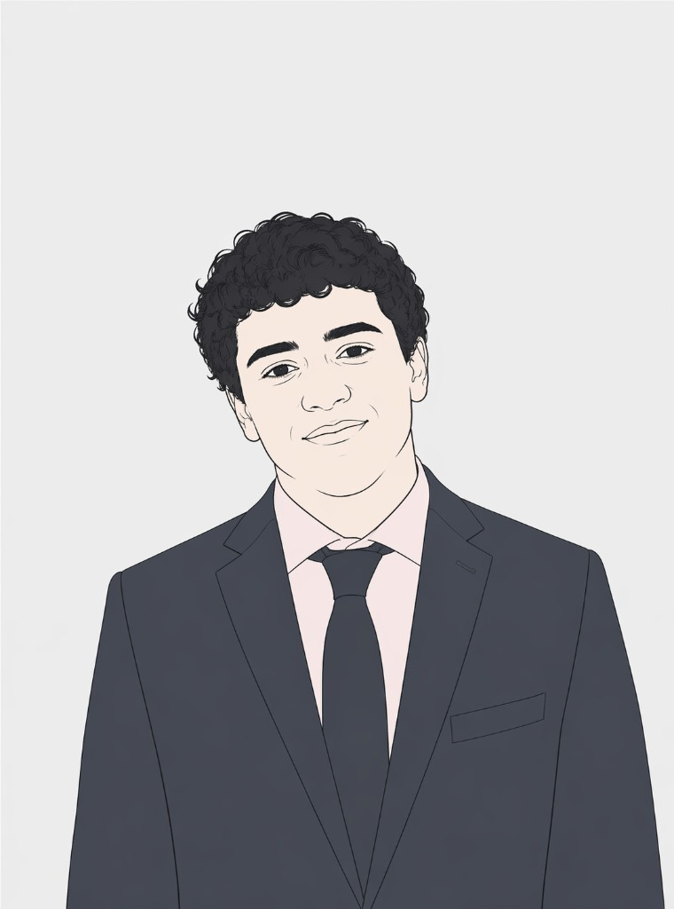

Faris Doughan
I am a second-year undergraduate at Harvard, concentrating in Mathematics and Statistics with a secondary in Computer Science. I also hope to pursue the concurrent Master’s in Applied Mathematics.
I am from Jordan, where I graduated from King’s Academy in 2024 before matriculating at Harvard. As an undergraduate, I am still exploring different areas, but some of the things I am currently most interested in are:
- Mathematics. Probability theory; stochastic processes + applications; random structures (matrices, random, graphs, etc.); and their combinatorics.
- Statistics. High-dimensional statistics; machine learning theory; mathematics of data science.
- Computer Science. Theory of computation; computational methods used across these fields.
I am also passionate about teaching!
This summer, I will conduct research on diffusion model generalization under the supervision of Dr. John Vastola in Professor Sam Gershman’s Computational Neuroscience Lab and the Lab for AI & Neurotheory.
To learn more about me, check out the tabs below.